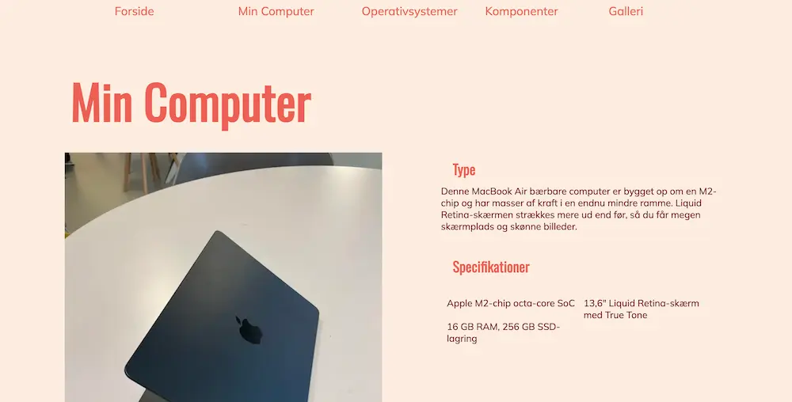

GRUNDLÆGGENDE WEB
Temaet
I temaet Grundlæggende Web lærte vi at aflæse, og kode ud fra de givne wireframes og layoutdiagrammer. Vi arbejdede ud fra ”mobile first”, og lærte at bruge grid til opsætning af tekster og billeder. Derudover blev vi introduceret til designkonventioner og gestaltprincipperne.
Min løsning
I designet af min opgave valgte jeg forskellige nuancer af orange/ ferskenfarvet. En lys ferskenfarvet baggrund, med mørkere nuancer til hhv. overskrifter og brødtekst. Dette gav hjemmesiden et varmt udtryk, hvilket er en kontrast til indholdet, som omhandler computere og teknologi. Nu ville jeg have valgt noget der passede mere til hjemmesidens indhold. Selve farverne giver en god kontrast til hinanden, så siden er meget læsbar for brugeren.
I processen lærte jeg hvordan man bruger grid til at placerer billeder og tekst i forhold til hinanden, så det ser pænt og overskueligt ud både i storskærms-format og på mobil. Dette gav en god forståelse for brugen af dette værktøj, som jeg har taget med mig i alle mine efterfølgende projekter.